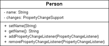

10.3 JavaBean
Die Architektur von JavaBeans ist ein einfaches Komponenten-Modell. Ursprünglich waren JavaBeans eng mit grafischen Oberflächen verbunden, und so liest sich in der JavaBeans-Spezifikation 1.01 von 1997 noch:
»A Java Bean is a reusable software component that can be manipulated visually in a builder tool.«Heutzutage ist das Feld viel größer, und Beans kommen in allen Ecken der Java-Bibliothek vor: bei der Persistenz (also bei der Abbildung der Objekte in relationalen Datenbanken oder XML-Dokumenten), als Datenmodelle für Webanwendungen, bei grafischen Oberflächen und in vielen weiteren Einsatzgebieten.
Im Kern basieren JavaBeans auf:
- Selbstbeobachtung (Introspection). Eine Klasse lässt sich von außen auslesen. So kann ein spezielles Programm, etwa ein GUI-Builder oder eine visuelle Entwicklungsumgebung, eine Bean analysieren und ihre Eigenschaften abfragen. Auch umgekehrt kann eine Bean herausfinden, ob sie etwa gerade von einem grafischen Entwicklungswerkzeug modelliert wird oder in einer Applikation ohne GUI Verwendung findet.
- Eigenschaften (Properties). Attribute beschreiben den Zustand des Objekts. In einem Modellierungswerkzeug lassen sie sich ändern. Da eine Bean zum Beispiel eine grafische Komponente sein kann, hat sie etwa eine Hintergrundfarbe. Diese Informationen können von außen durch bestimmte Methoden abgefragt und verändert werden. Für alle Eigenschaften werden spezielle Zugriffsmethoden deklariert; sie werden Property-Design-Patterns genannt.
- Ereignissen (Events). Komponenten können Ereignisse auslösen, die Zustandsänderungen oder Programmteile weiterleiten können.
- Anpassung (Customization). Der Bean-Entwickler kann die Eigenschaften einer Bean visuell und interaktiv anpassen.
- Speicherung (Persistenz). Jede Bean kann ihren internen Zustand, also die Eigenschaften, durch Serialisierung speichern und wiederherstellen. So kann ein Builder-Tool die Komponenten laden und benutzen. Ein spezieller Externalisierungsmechanismus erlaubt dem Entwickler die Definition eines eigenen Speicherformats, zum Beispiel als XML-Datei.
Zusätzlich zu diesen notwendigen Grundpfeilern lässt sich durch Internationalisierung die Entwicklung internationaler Komponenten vereinfachen. Verwendet eine Bean länderspezifische Ausdrücke, wie etwa Währungs- oder Datumsformate, kann der Bean-Entwickler mit länderunabhängigen Bezeichnern arbeiten, die dann in die jeweilige Landessprache übersetzt werden.
10.3.1 Properties (Eigenschaften)
Die Properties einer JavaBean steuern den Zustand des Objekts. Bisher hat Java keine spezielle Schreibweise für Properties – anders als C# und andere Sprachen –, und so nutzt es eine spezielle Namensgebung bei den Methoden, um Eigenschaften zu lesen und zu schreiben. Der JavaBeans-Standard unterscheidet vier Arten von Properties:
- Einfache Eigenschaften. Hat eine Person eine Property »Name«, so bietet die JavaBean die Methoden getName() und setName() an.
- Indizierte/Indexierte Eigenschaften (engl. indexed properties). Sie werden eingesetzt, falls mehrere gleiche Eigenschaften aus einem Array verwaltet werden. So lassen sich Felder gleichen Datentyps verwalten.
- Gebundene Eigenschaften (engl. bound properties). Ändert eine JavaBean ihren Zustand, kann sie angemeldete Interessenten (Listener) informieren.
- Eigenschaft mit Vetorecht (engl. veto properties, auch constraint properties beziehungsweise eingeschränkte Eigenschaften genannt). Ihre Benutzung ist in jenen Fällen angebracht, in denen eine Bean Eigenschaften ändern möchte, andere Beans aber dagegen sind und ihr Veto einlegen.
Die Eigenschaften der Komponente können primitive Datentypen, aber auch komplexe Klassen sein. Der Text einer Schaltfläche ist ein einfacher String; eine Sortierstrategie in einem Sortierprogramm ist dagegen ein komplexes Objekt.
10.3.2 Einfache Eigenschaften
Für die einfachen Eigenschaften muss für die Setter und Getter nur ein Paar von setXXX()- und getXXX()-Methoden eingesetzt werden. Der Zugriff auf eine Objektvariable wird also über Methoden geregelt. Dies hat den Vorteil, dass ein Zugriffsschutz und weitere Überprüfungen eingerichtet werden können. Soll eine Eigenschaft nur gelesen werden (weil sie sich zum Beispiel regelmäßig automatisch aktualisiert), müssen wir die setXXX()-Methode nicht implementieren. Genauso gut können wir Werte, die außerhalb des erlaubten Wertebereichs unserer Applikation liegen, prüfen und ablehnen. Dazu kann eine Methode eine Exception auslösen.
Allgemein sieht dann die Signatur der Methoden für eine Eigenschaft XXX vom Typ T folgendermaßen aus:
- public T getXXX()
- public void setXXX( T value )
Ist der Property-Typ ein Wahrheitswert, ist neben der Methode getXXX() eine isXXX()-Methode erlaubt:
- public boolean isXXX()
- public void setXXX( boolean value )
10.3.3 Indizierte Eigenschaften
Falls eine Bean nur über eine einfache Eigenschaft wie eine primitive Variable verfügt, so weisen die getXXX()-Methoden keinen Parameter und genau einen Rückgabewert auf. Der Rückgabewert hat den gleichen Datentyp wie die interne Eigenschaft. Die setXXX()-Methode besitzt genau einen Parameter des Datentyps dieser Eigenschaft und hat keinen expliziten Rückgabewert, sondern void. Wenn nun kein atomarer Wert, sondern ein Feld von Werten intern gespeichert ist, müssen wir Zugriff auf bestimmte Werte bekommen. Daher erwarten die setXXX()- und getXXX()-Methoden im zusätzlichen Parameter einen Index:
- public T[] getXXX()
- public T getXXX( int index )
- public void setXXX( T[] values )
- public void setXXX( T value, int index )
10.3.4 Gebundene Eigenschaften und PropertyChangeListener
Die gebundenen Eigenschaften einer Bean erlauben es, andere Komponenten über eine Zustandsänderung der Properties zu informieren. Wenn sich zum Beispiel der Name eines Spielers durch den Aufruf einer Methode setName() ändert, führt die Namensänderung vielleicht an anderer Stelle zu einer Aktualisierung der Darstellung. Bei den gebundenen Eigenschaften (engl. bound properties) geht es ausschließlich um Änderungen der Properties und nicht um andere Ereignisse, die nichts mit den Bean-Eigenschaften zu tun haben.
Die Listener empfangen von der Bean ein PropertyChangeEvent, das sie auswerten können. Die Interessierten implementieren dafür PropertyChangeListener. Das Ereignis-Objekt speichert den alten und den neuen Wert sowie den Typ und den Namen der Eigenschaft.
Die Bean muss also nur die Interessenten aufnehmen und dann feuern, wenn es eine Änderung an den Properties gibt. Da die Verwaltung der Listener immer gleich ist, bietet Java hier schon eine Klasse an: PropertyChangeSupport, die die JavaBeans nutzen, um die Listener zu verwalten. Die Interessenten lassen sich mit addPropertyChangeListener() als Zuhörer einfügen und mit removePropertyChangeListener() abhängen. Bei einer Veränderung ruft die Bean auf dem PropertyChangeSupport-Objekt die Methode firePropertyChange() auf, und so werden alle registrierten Zuhörer durch ein PropertyChangeEvent informiert. Die Zuhörer werden erst nach der Änderung des internen Zustands informiert.
Ein Beispiel: Unsere Person-Komponente besitzt eine Property »Name«, die der Setter setName() ändert. Nach der Änderung werden alle Listener informiert. Sie bewirkt darüber hinaus nichts Großartiges:
Listing 10.9: com/tutego/insel/bean/bound/Person.java
package com.tutego.insel.bean.bound;
import java.beans.PropertyChangeListener;
import java.beans.PropertyChangeSupport;
public class Person
{
private String name = "";
private PropertyChangeSupport changes = new PropertyChangeSupport( this );
public void setName( String name )
{
String oldName = this.name;
this.name = name;
changes.firePropertyChange( "name", oldName, name );
}
public String getName()
{
return name;
}
public void addPropertyChangeListener( PropertyChangeListener l )
{
changes.addPropertyChangeListener( l );
}
public void removePropertyChangeListener( PropertyChangeListener l )
{
changes.removePropertyChangeListener( l );
}
}
Der Implementierung setName() kommt zentrale Bedeutung zu. Der erste Parameter von firePropertyChange() ist der Name der Eigenschaft. Er ist für das Ereignis von Belang und muss nicht zwingend der Name der Bean-Eigenschaft sein. Es folgen der alte und der neue Stand des Werts. Die Methode informiert alle angemeldeten Zuhörer über die Änderung mit einem PropertyChangeEvent.
Abbildung 10.3: UML-Diagramm der Klasse Person zeigt die Listener-Unterstützung.
class java.beans.PropertyChangeSupport |
- PropertyChangeSupport(Object sourceBean)
Konstruiert ein PropertyChangeSupport-Objekt, das sourceBean als auslösende Bean betrachtet. - synchronized void addPropertyChangeListener(PropertyChangeListener listener)
Fügt einen Listener hinzu. - synchronized void removePropertyChangeListener(PropertyChangeListener listener)
Entfernt einen Listener. - synchronized void addPropertyChangeListener(String propertyName,
PropertyChangeListener listener)
Fügt einen Listener hinzu, der nur auf Ereignisse mit dem Namen propertyName hört. - synchronized void removePropertyChangeListener(String propertyName,
PropertyChangeListener listener)
Entfernt den Listener, der auf propertyName hört. - void firePropertyChange(String propertyName, Object oldValue, Object newValue)
Informiert alle Listener über eine Werteänderung. Sind alte und neue Werte gleich, werden keine Events ausgelöst. - void firePropertyChange(String propertyName, int oldValue, int newValue)
- void firePropertyChange(String propertyName, boolean oldValue, boolean newValue)
Varianten von firePropertyChange() mit Integer- und Boolean-Werten - void firePropertyChange(PropertyChangeEvent evt)
Informiert alle Interessenten mit einem PropertyChangeEvent, indem es propertyChange() aufruft. - synchronized boolean hasListeners(String propertyName)
Liefert true, wenn es mindestens einen Listener für die Eigenschaft gibt.
Angemeldete PropertyChangeListener können auf das PropertyChangeEvent reagieren. Wir testen das an einer Person, die einen neuen Namen bekommt:
Listing 10.10: com/tutego/insel/bean/bound/PersonWatcher.java, main()
Person p = new Person();
p.addPropertyChangeListener( new PropertyChangeListener()
{
@Override public void propertyChange( PropertyChangeEvent e )
{
System.out.printf( "Property '%s': '%s' -> '%s'%n",
e.getPropertyName(), e.getOldValue(), e.getNewValue() );
}
} );
p.setName( "Ulli" ); // Property 'name': '' -> 'Ulli'
p.setName( "Ulli" );
p.setName( "Chris" ); // Property 'name': 'Ulli' -> 'Chris'
Beim zweiten setName() erfolgt kein Event, da es nur dann ausgelöst wird, wenn der Wert wirklich nach der equals()-Methode anders ist.
interface java.beans.PropertyChangeListener |
- void propertyChange(PropertyChangeEvent evt)
Wird aufgerufen, wenn sich die gebundene Eigenschaft ändert. Über das PropertyChangeEvent erfahren wir die Quelle und den Inhalt der Eigenschaft.
class java.beans.PropertyChangeEvent |
- PropertyChangeEvent(Object source, String propertyName,
Object oldValue, Object newValue)
Erzeugt ein neues Objekt mit der Quelle, die das Ereignis auslöst, einem Namen, dem alten und dem gewünschten Wert. Die Werte werden intern in privaten Variablen gehalten und lassen sich später nicht mehr ändern. - String getPropertyName()
Liefert den Namen der Eigenschaft. - Object getNewValue()
Liefert den neuen Wert. - Object getOldValue()
Liefert den alten Wert.
10.3.5 Veto-Eigenschaften – dagegen!
Wenn sich der Zustand einer gebundenen Eigenschaft ändert, informieren JavaBeans ihre Zuhörer darüber. Möglicherweise haben diese Zuhörer jedoch etwas gegen diesen neuen Wert. In diesem Fall kann ein Zuhörer ein Veto mit einer PropertyVetoException einlegen und so eine Werteänderung verhindern. Es geht nicht darum, dass die Komponente selbst den Wert ablehnt – es geht um die Interessenten, die das nicht wollen!
Bevor eine JavaBean eine Änderung an einer Property durchführt, holen wir zunächst die Zustimmung ein. Programmieren wir eine setXXX()-Methode mit Veto, gibt es im Rumpf vor dem meldenden firePropertyChange() ein fragendes fireVetoableChange(), das die Veto-Listener informiert. Der Veto-Listener kann durch eine ausgelöste PropertyVetoException anzeigen, dass er gegen die Änderung war. Das bricht den Setter ab, und es kommt nicht zum firePropertyChange(). Wegen der PropertyVetoException muss auch die Methode eine Signatur mit throws PropertyVetoException besitzen.
In unserem Beispiel darf die Person ein Bigamist sein. Aber natürlich nur dann, wenn es kein Veto gab!
Listing 10.11: com/tutego/insel/bean/veto/Person.java
package com.tutego.insel.bean.veto;
import java.beans.*;
public class Person
{
private boolean bigamist;
private PropertyChangeSupport changes = new PropertyChangeSupport( this );
private VetoableChangeSupport vetos = new VetoableChangeSupport( this );
public void setBigamist( boolean bigamist ) throws PropertyVetoException
{
boolean oldValue = this.bigamist;
vetos.fireVetoableChange( "bigamist", oldValue, bigamist );
this.bigamist = bigamist;
changes.firePropertyChange( "bigamist", oldValue, bigamist );
}
public boolean isBigamist()
{
return bigamist;
}
public void addPropertyChangeListener( PropertyChangeListener l )
{
changes.addPropertyChangeListener( l );
}
public void removePropertyChangeListener( PropertyChangeListener l )
{
changes.removePropertyChangeListener( l );
}
public void addVetoableChangeListener( VetoableChangeListener l )
{
vetos.addVetoableChangeListener( l );
}
public void removeVetoableChangeListener( VetoableChangeListener l )
{
vetos.removeVetoableChangeListener( l );
}
}
Wie wir an dem Beispiel sehen, ist zusätzlich zum Veto eine gebundene Eigenschaft dabei. Das ist die Regel, damit Interessierte nicht nur gegen gewünschte Änderungen Einspruch erheben können, sondern die tatsächlich gemachten Belegungen ebenfalls erfahren. Der Kern einer Setter-Methode mit Veto ist es, erst eine Änderung mit fireVetoableChange() anzukündigen und dann, wenn es keine Einwände dagegen gibt, mit firePropertyChange() diese neue Belegung zu berichten.
Melden wir bei einer Person einen PropertyChangeListener an, um alle gültigen Zustandswechsel auszugeben:
Listing 10.12: com/tutego/insel/bean/veto/PersonWatcher.java, main() Teil 1
Person p = new Person();
p.addPropertyChangeListener( new PropertyChangeListener()
{
@Override public void propertyChange( PropertyChangeEvent e )
{
System.out.printf( "Property '%s': '%s' -> '%s'%n",
e.getPropertyName(), e.getOldValue(), e.getNewValue() );
}
} );
Ohne ein Veto gehen alle Zustandsänderungen durch:
Listing 10.13: com/tutego/insel/bean/veto/PersonWatcher.java, main() Teil 2
try
{
p.setBigamist( true );
p.setBigamist( false );
}
catch ( PropertyVetoException e )
{
e.printStackTrace();
}
Die Ausgabe wird sein:
Property 'bigamist': 'false' -> 'true'
Property 'bigamist': 'true' -> 'false'
Nach der Heirat darf unsere Person kein Bigamist mehr sein. Während am Anfang ein Wechsel der Zustände leicht möglich war, ist nach dem Hinzufügen eines veto-einlegenden VetoableChangeListener eine Änderung nicht mehr erlaubt:
Listing 10.14: com/tutego/insel/bean/veto/PersonWatcher.java, main() Teil 3
p.addVetoableChangeListener( new VetoableChangeListener()
{
@Override
public void vetoableChange( PropertyChangeEvent e )
throws PropertyVetoException
{
if ( "bigamist".equals( e.getPropertyName() ) )
if ( (Boolean) e.getNewValue() )
throw new PropertyVetoException( "Nimm zwei ist nichts für mich!", e );
}
} );
Der Kern der Logik ist die Anweisung throw new PropertyVetoException. Jetzt sind keine unerwünschten Änderungen mehr möglich:
Listing 10.15: com/tutego/insel/bean/veto/PersonWatcher.java, main() Teil 4
try
{
p.setBigamist( true );
}
catch ( PropertyVetoException e )
{
e.printStackTrace();
}
Das setBigamist(true) führt zu einer PropertyVetoException. Der Stack-Trace ist:
java.beans.PropertyVetoException: Nimm zwei ist nichts für mich!
at com.tutego.insel.bean.veto.PersonWatcher$2.vetoableChange(PersonWatcher.java40)
at java.beans.VetoableChangeSupport.fireVetoableChange(VetoableChangeSupport.java:335)
at java.beans.VetoableChangeSupport.fireVetoableChange(VetoableChangeSupport.java:252)
at java.beans.VetoableChangeSupport.fireVetoableChange(VetoableChangeSupport.java:294)
at com.tutego.insel.bean.veto.Person.setBigamist(Person.java:19)
at com.tutego.insel.bean.veto.PersonWatcher.main(PersonWatcher.java:46)
Obwohl es mit addPropertyChangeListener(PropertyChangeListener l) sowie addVetoableChangeListener(VetoableChangeListener l) jeweils zwei Listener gibt, versenden beide Ereignis-Objekte vom Typ PropertyChangeEvent. Doch während bei Veto-Objekten vor der Zustandsänderung ein PropertyChangeEvent erzeugt und versendet wird, informieren die gebundenen Eigenschaften erst nach der Änderung ihre Zuhörer mit einem PropertyChangeEvent. Daher bedeutet das Aufkommen eines PropertyChangeEvent jeweils etwas Unterschiedliches.
class java.beans.VetoableChangeSupport |
- void addVetoableChangeListener(VetoableChangeListener listener)
Fügt einen VetoableListener hinzu, der alle gewünschten Änderungen meldet. - void addVetoableChangeListener(String propertyName, VetoableChangeListener listener)
Fügt einen VetoableListener hinzu, der auf alle gewünschten Änderungen der Property propertyName hört. - void fireVetoableChange(String propertyName, boolean oldValue, boolean newValue)
- void fireVetoableChange(String propertyName, int oldValue, int newValue)
- void fireVetoableChange(String propertyName, Object oldValue, Object newValue)
Die fireVetoableChange()-Methoden melden eine gewünschte Änderung der Eigenschaft mit dem Namen propertyName.
interface java.beans.VetoableChangeListener |
- void vetoableChange(PropertyChangeEvent evt) throws PropertyVetoException
Wird aufgerufen, wenn die gebundene Eigenschaft geändert werden soll. Über das PropertyChangeEvent erfahren wir die Quelle und den Inhalt der Eigenschaft. Die Methode löst eine PropertyVetoException aus, wenn die Eigenschaft nicht geändert werden soll.
Ihr Kommentar
Wie hat Ihnen das <openbook> gefallen? Wir freuen uns immer über Ihre freundlichen und kritischen Rückmeldungen.
 Jetzt bestellen
Jetzt bestellen


{kind=link}